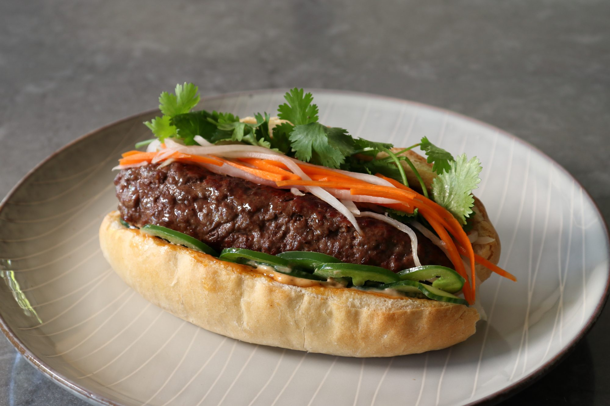

Vietnamese Banh mi Recipe

Description
That old saying, "If it's not broken, don't fix it," is sound advice in almost all areas of life with one very notable exception… the kitchen. Many of our favorite dishes are versions of perfectly fine recipes that we've tweaked and twisted into something new and exciting, and this Banh Mi Burger is a great example.
The char-grilled ground beef was an absolutely perfect pairing with the traditional banh mi fixings, and while I generally prefer a soft, sesame bun for my burgers, the crusty, French-style sandwich roll was amazing. By the way, don't be shy with the mayo sauce, as this needs to be generously dressed to bring all the ingredients together. And, if you're not into ground beef, I still hope you try this approach with whatever meat, grilled or otherwise, you decide to enjoy.
It was tempting to make this with the traditional swipe of pate on the roll, but since I used a nice, fatty ground beef, I thought that might be a little too rich. On my next attempt, maybe I'll try a leaner blend, and go full banh mi. I'll report back with an update if I do, but in the meantime, whether you "fix" this unbroken banh mi burger or not, I really do hope you give it a try soon.
Ingredients
For the Burger:
- 1 pound ground beef chuck
- 1 teaspoon soy sauce
- 1 teaspoon fish sauce
- ½ teaspoon freshly ground black pepper
- ⅛ teaspoon five-spice powder
For the Sandwich:
- ¼ cup mayonnaise
- 1 tablespoon hoisin sauce
- 2 teaspoons Sriracha
- 2 French sandwich rolls
- ½ cup julienned carrot
- ½ cup julienned daikon radish
- 1 tablespoon seasoned rice vinegar
- 8 thin slices English cucumber
- 2 tablespoons sliced jalapeno pepper, or to taste
- 1 tablespoon fresh cilantro leaves, or to taste
Directions
- Combine beef, fish sauce, soy sauce, freshly ground black pepper, and 5-spice powder in a bowl, and mix until evenly combined. Cover with plastic wrap and refrigerate until chilled.
- Mix mayonnaise, hoisin, and Sriracha together in a small bowl for sauce. Keep chilled until needed.
- Preheat the oven to 400 degrees F (200 degrees C). Line a baking sheet with foil.
- Cut open rolls, remove about 1/2 of the inside crumb, and place on the prepared baking sheet.
- Bake rolls in the preheated oven until toasted, 5 to 10 minutes.
- Meanwhile, using damp hands, shape beef mixture into two burger patties sized to match your rolls or buns. Keep in the refrigerator until needed.
- Combine carrots and daikon radish in a bowl. Add rice vinegar and toss to coat. Refrigerate until needed.
- Preheat a charcoal grill to high heat.
- Cook burgers over the hot coals until desired doneness is reached and they spring back to the touch, turning as needed, about 4 minutes per side for medium-rare. An instant-read thermometer inserted into the centers should read at least 145 degrees F (63 degrees C).
- Slather toasted buns with mayo mixture. Place cucumbers and jalapeno slices on bottom of rolls, and top with cooked burgers. Top with carrot-radish mixture and cilantro.